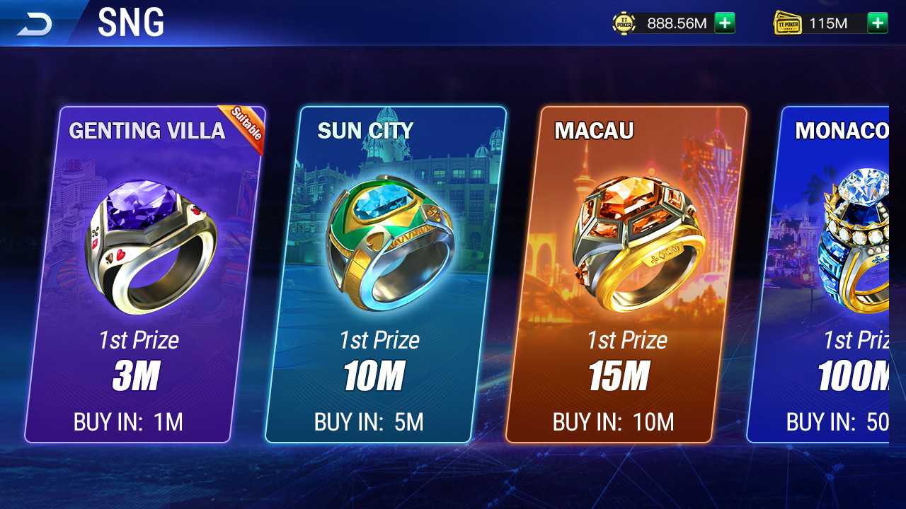
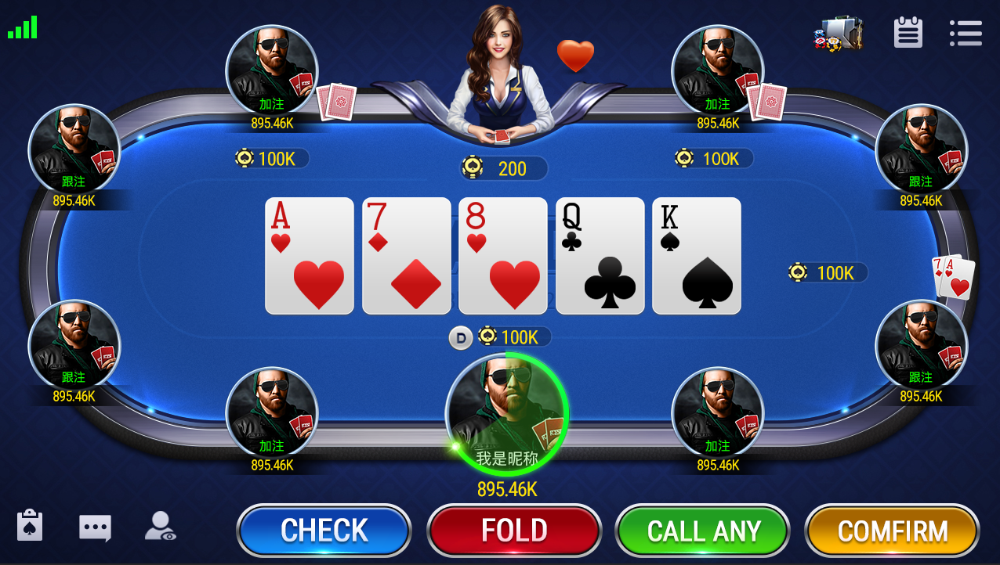

Multi-mode lobby
Classic, AOF, short deck, ranked, private-room and tournament entry.
Explore a multi-mode lobby, tournaments and multiplayer tables alongside verifiable C++ server structures and Unity/Lua assets.
View product screensView GitHubThe product screens include classic Hold'em, AOF, 6+ short deck, ranked play, private-room and tournament entry points. MTT/SNG screens present registration and prize tiers, while tables show seats, community cards and player actions.
Classic, AOF, short deck, ranked, private-room and tournament entry.
Tournament discovery, registration, countdowns and prize tiers.
Blinds, seating, cards, pots, actions and result feedback.






| Layer | Public repository evidence |
|---|---|
| Table context | Players, seats, blinds, hole/community cards, pots, insurance and histories |
| Game flow | Begin/end timers, action timing, broadcasts and game details |
| Services | C++ GameServer, GMServer, Tars servant and factory interfaces |
| Data/client | MySQL, tournament configuration, Unity prefabs and Lua utilities |
The Makefile references external Tars/XGame modules. Complete protocols, services, database, configuration and client dependencies, then test side pots, all-ins, reconnects, hand evaluation, settlement and tournament transitions.
Specify the client, server, database, tournament or deployment scope you need to verify.